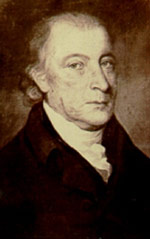

by
Stefan Bielinski
 Samuel Stringer was born in 1734. He was the son of Samuel and Lydia Warfield Stringer of Annapolis, Maryland. His father was a prominent physician and young Samuel was groomed to follow in his footsteps. the elder Samuel also was mayor of Annapolis but died in 1747. His brick house in Annaoplis was bequeathed to young Samuel.
Trained for the medical profession in Philadelphia under Dr. Thomas Bond, in 1755 he was contracted to perform surgical services for the colonial army by General/Governor William Shirley. That initiative brought him to Albany during the last of the French and Indian Wars.
Stringer married Albany native Rachel Vanderheyden in November 1758. The marriage produced but three children who were baptized at St. Peters Anglican church where Stringer was a prominent member. Marriage to the daughter of a successful Albany businesman, jurist, and official provided Stringer with access to the patients, political opportunities, and land.
An Albany resident throughout the remainder of his life, Stringer petitioned for and recieived a number of land patents during the 1760s and early 70s. His holdings were in the Mohawk, Schoharie, and upper Hudson valleys. In 1779, his Saratoga Property was listed on an assessment roll.
He was a member and officer of St. Peter's Anglican church and the Albany Masonic lodge.
This politically active physician early on answered the call in support of American liberties. He was appointed head of the Continental medical corps in the north - with headquarters at the Albany hospital. Another tradition states that Stringer was hired and paid by Philip Schuyler personally to minister to his troops. 
After the war, he built a large town house on North Market Street. It was shared with his son-in-law, Stephen Lush. In 1800, it was served by three slaves. Living in an adjoining building next to Lush was another daughter and her husband, attorney and jurist Richard S. Treat.
In 1793, Stringer was appointed as one of two commissioners to examine physicians and surgeons in the city of Albany by the State legislature.
Samuel Stringer died at home on July 11, 1817. He was eighty-three-years-old and Albany's first professional physician!
notes
Portrait of Samuel Stringer by a Ezra Ames. The portrait hangs in the Albany Masonic Lodge of which Stringer was a founding member. Sources: The life of Samuel Stringer is CAP biography
number 5046. This profile is derived chiefly from family
and community-based resources. The project
has accumulated a substantial file of Stringer-related materials. Until
now, an online
biography has been the resource of record on his life. The first volume of Mary C. Gillett's
monumental work chronicles Stringer's tenure with the Revolutionary army . It has been available (but not consistently) online.
Sources: The life of Samuel Stringer is CAP biography
number 5046. This profile is derived chiefly from family
and community-based resources. The project
has accumulated a substantial file of Stringer-related materials. Until
now, an online
biography has been the resource of record on his life. The first volume of Mary C. Gillett's
monumental work chronicles Stringer's tenure with the Revolutionary army . It has been available (but not consistently) online.
first posted 12/20/02; last updated 4/7/13